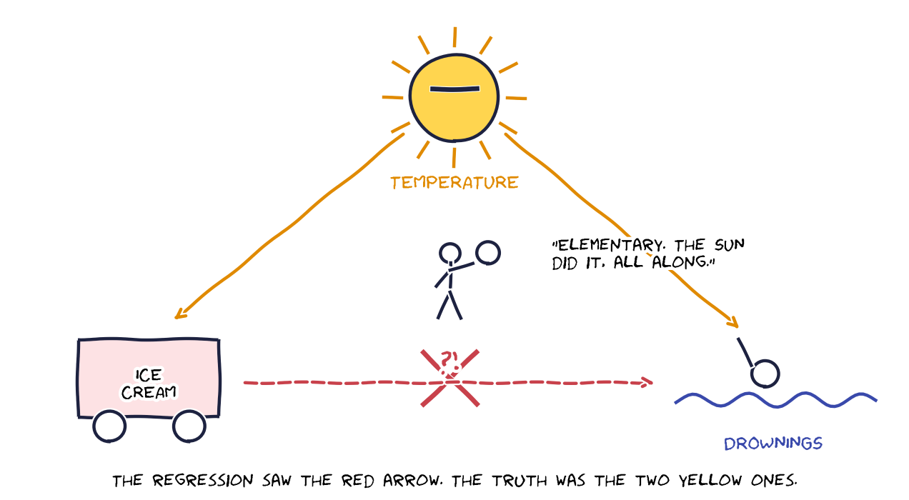

Does Ice Cream Drown People? The Case of the Missing Variable
Here is a headline I would love to see in a newspaper: "Ice cream linked to drownings: every extra thousand litres sold costs lives." It sounds absurd. Yet the regression behind it would look perfectly respectable, with a t-statistic of 20 and an R-squared that would make any student proud.
This post is a detective story. There is a body, a suspect, and a culprit hiding in plain sight. By the end you will know the formula that every econometrician should carry in their pocket: the omitted variable bias formula.
Foundations · Post 1 of 8
1. Omitted variables · 2. Spurious regression · 3. R-squared · 4. Measurement error · 5. Heteroskedasticity · 6. Dummy variables · 7. Structural breaks · 8. Multicollinearity
Data: blog_datasets.xlsx, sheet P1_icecream · Simulated monthly data, 2015M01–2024M12, 120 observations · EViews program

Storks, babies and a statistician with a sense of humour
Before we look at ice cream, meet my favourite paper in the history of statistics. In 2000, the British science writer Robert Matthews published "Storks Deliver Babies (p = 0.008)" in the journal Teaching Statistics. He collected data on the number of breeding pairs of white storks and the number of human births in 17 European countries. The correlation was 0.62, with a p-value of 0.008. By the usual standards, the evidence that storks deliver babies is "highly significant".
Matthews was, of course, joking with a straight face. He even pointed to the likely culprit: land area. Big countries have more room for storks and more people having babies. Leave land area out, and storks get the credit.
A more serious version of the same trap made headlines in 1973. The University of California, Berkeley, appeared to admit men to graduate school at a noticeably higher rate than women. When Peter Bickel and his colleagues looked department by department (Science, 1975), the bias largely disappeared. Women had applied in larger numbers to the most competitive departments, which rejected most applicants of either sex. The missing variable was the department. Statisticians call this reversal Simpson's paradox, and it is the omitted variable problem in its most dramatic costume.
The crime scene: our data
Imagine a coastal district. Every month for ten years we record three things:
- DROWN: the number of drowning incidents
- ICECREAM: ice cream sales, in thousand litres
- TEMP: the average maximum temperature, in °C
A keen young analyst only has the first two series. She opens EViews and types ls drown c icecream.
Dependent Variable: DROWN
Method: Least Squares
Date: 10/27/26 Time: 21:45
Sample: 2015M01 2024M12
Included observations: 120
==============================================================================
Variable Coefficient Std. Error t-Statistic Prob.
==============================================================================
C -1.241883 0.865828 -1.434329 0.1541
ICECREAM 0.140186 0.006832 20.51921 0.0000
==============================================================================
R-squared 0.781091 Mean dependent var 15.96667
Adjusted R-squared 0.779236 S.D. dependent var 5.017504
S.E. of regression 2.357499 Akaike info criterion 4.569606
Sum squared resid 655.8208 Schwarz criterion 4.616064
Log likelihood -272.1764 Hannan-Quinn criter. 4.588473
F-statistic 421.0379 Durbin-Watson stat 1.833329
Prob(F-statistic) 0.000000
==============================================================================
A t-statistic of 20.5. A p-value that rounds to zero. An R-squared of 0.78. On paper, every extra thousand litres of ice cream comes with 0.14 more drownings a month. Should the district ban ice cream?
The detective's first question: what else moves with X?
On hot days, people buy ice cream. On hot days, people also go swimming. Temperature drives both series. Ice cream is simply standing in for the weather, like an innocent bystander who happened to be at every crime scene.
How closely do ice cream and temperature move together? Their correlation in our data is 0.98. They are almost the same series.
The omitted variable bias formula (with a short derivation)
Suppose the true model is
but we estimate the "short" regression without TEMP:
Derivation: what does \(b_1\) actually estimate? (click to open)
Write the "auxiliary" regression of the omitted variable on the included one:
Substitute it into the true model:
The coefficient on ICECREAM in this rearranged equation is \(\beta_1 + \beta_2\delta_1\). The new error \(\beta_2 v_i + u_i\) is uncorrelated with ICECREAM (because \(v_i\) is a regression residual), so OLS on the short regression estimates exactly this.
The result is the formula every econometrician should know by heart:
Two things must both be true for bias to appear:
- The omitted variable affects the outcome (\(\beta_2 \neq 0\)), and
- it is correlated with the included regressor (\(\delta_1 \neq 0\)).
And the formula even tells you the direction of the bias:
| Omitted variable moves with X (\(\delta_1 > 0\)) | Omitted variable moves against X (\(\delta_1 < 0\)) | |
|---|---|---|
| It raises Y (\(\beta_2 > 0\)) | Upward bias | Downward bias |
| It lowers Y (\(\beta_2 < 0\)) | Downward bias | Upward bias |
Temperature raises drownings and moves with ice cream sales: top-left box, upward bias. Exactly what we saw.
Bringing the suspect in for questioning
Two diagnostic tests are worth knowing.
Test 1: the Omitted Variables test
If you have a candidate variable, test it directly. In the equation window: View → Coefficient Diagnostics → Omitted Variables Test, and type TEMP (command: eq1a.testadd temp).
Omitted Variables Test
Equation: EQ1A
Omitted Variables: TEMP
Specification: DROWN C ICECREAM TEMP
Null hypothesis: TEMP is not significant
==============================================================================
Value df Probability
==============================================================================
t-statistic 5.066571 117 0.0000
F-statistic 25.67014 (1, 117) 0.0000
Likelihood ratio 23.80336 1 0.0000
==============================================================================
F = 25.7, p < 0.0001. Temperature belongs in the model.
Test 2: Ramsey's RESET test
What if you don't know what is missing? In 1969, James Ramsey proposed the Regression Equation Specification Error Test, RESET. The idea is cheeky: add powers of the fitted values to the regression. If the model is correctly specified, they should add nothing. If they help, something is wrong with the functional form or something is missing. (View → Stability Diagnostics → Ramsey RESET Test, command eq1a.reset(1).)
Ramsey RESET Test
Equation: EQ1A
Specification: DROWN C ICECREAM
Omitted Variables: Squares of fitted values
==============================================================================
Value df Probability
==============================================================================
t-statistic 0.404175 117 0.6868
F-statistic 0.163357 (1, 117) 0.6868
Likelihood ratio 0.167429 1 0.6824
==============================================================================
p = 0.69. RESET finds nothing wrong! Here is an important lesson: RESET mainly detects wrong functional form (a straight line where there should be a curve). Our missing variable, temperature, is a straight-line cousin of ice cream, so the squared fitted values carry no extra information. No test can find a variable it has never heard of. Economic thinking must come first.
Now let the weather in
ls drown c icecream temp
Dependent Variable: DROWN
Method: Least Squares
Date: 10/27/26 Time: 21:45
Sample: 2015M01 2024M12
Included observations: 120
==============================================================================
Variable Coefficient Std. Error t-Statistic Prob.
==============================================================================
C -58.18576 11.26668 -5.164408 0.0000
ICECREAM -0.027916 0.033755 -0.827000 0.4099
TEMP 2.506193 0.494653 5.066571 0.0000
==============================================================================
R-squared 0.820479 Mean dependent var 15.96667
Adjusted R-squared 0.817410 S.D. dependent var 5.017504
S.E. of regression 2.144006 Akaike info criterion 4.387912
Sum squared resid 537.8212 Schwarz criterion 4.457599
Log likelihood -260.2747 Hannan-Quinn criter. 4.416212
F-statistic 267.3670 Durbin-Watson stat 1.936825
Prob(F-statistic) 0.000000
==============================================================================
The "ice cream effect" collapses. Its coefficient is now slightly negative, with a p-value of 0.41. Temperature carries the load: each extra degree adds about 2.5 drownings a month.
Let's check the bias formula with real numbers. Regress the omitted variable on the included one (ls temp c icecream):
Dependent Variable: TEMP
Method: Least Squares
Date: 10/27/26 Time: 21:45
Sample: 2015M01 2024M12
Included observations: 120
==============================================================================
Variable Coefficient Std. Error t-Statistic Prob.
==============================================================================
C 22.72126 0.146543 155.0486 0.0000
ICECREAM 0.067075 0.001156 58.00700 0.0000
==============================================================================
R-squared 0.966119 Mean dependent var 30.95500
Adjusted R-squared 0.965832 S.D. dependent var 2.158620
S.E. of regression 0.399011 Akaike info criterion 1.016869
Sum squared resid 18.78673 Schwarz criterion 1.063328
Log likelihood -59.01217 Hannan-Quinn criter. 1.035736
F-statistic 3364.812 Durbin-Watson stat 2.174390
Prob(F-statistic) 0.000000
==============================================================================
So \(\hat\delta_1 = 0.0671\): each extra thousand litres of ice cream comes with 0.067°C more temperature. Plug everything into the formula:
That is exactly the coefficient of the short regression, 0.140186. The formula is not an approximation in a sample: it holds to the last decimal place.
Notice too that the standard error on ICECREAM jumped from 0.007 to 0.034 when TEMP came in. That is because ice cream and temperature are almost the same series. Hold that thought; it is the subject of Post 8.
Confession
I generated these data. In the true model, ice cream has zero effect on drownings. Temperature alone does the work. That is the beauty of simulation: we know the truth, so we can catch the regression lying.
The lesson
A significant t-statistic tells you that a coefficient is precisely estimated. It does not tell you that the coefficient means what you want it to mean. Before trusting any slope, play detective: what else moves with my X, and also moves my Y?
Something to think about
Studies often find that people who drink a little coffee live longer than people who drink none. Name three omitted variables that could create this pattern. For each one, use the table above to say which way it would bias the coffee coefficient. Leave your answers in the comments.